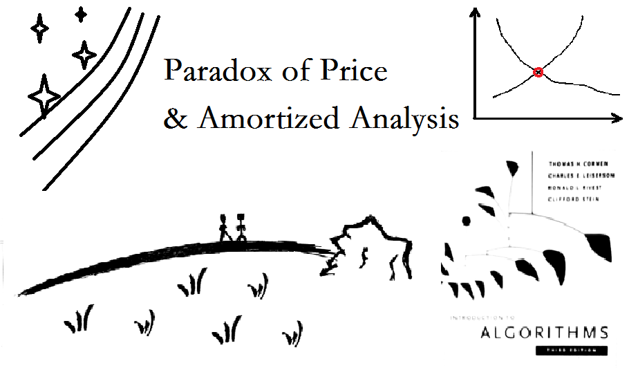
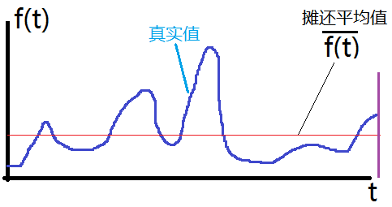
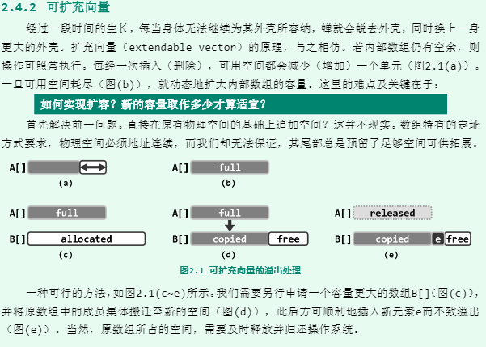
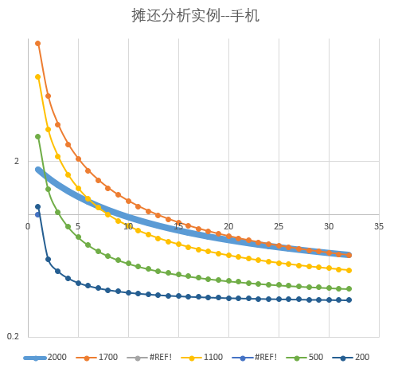
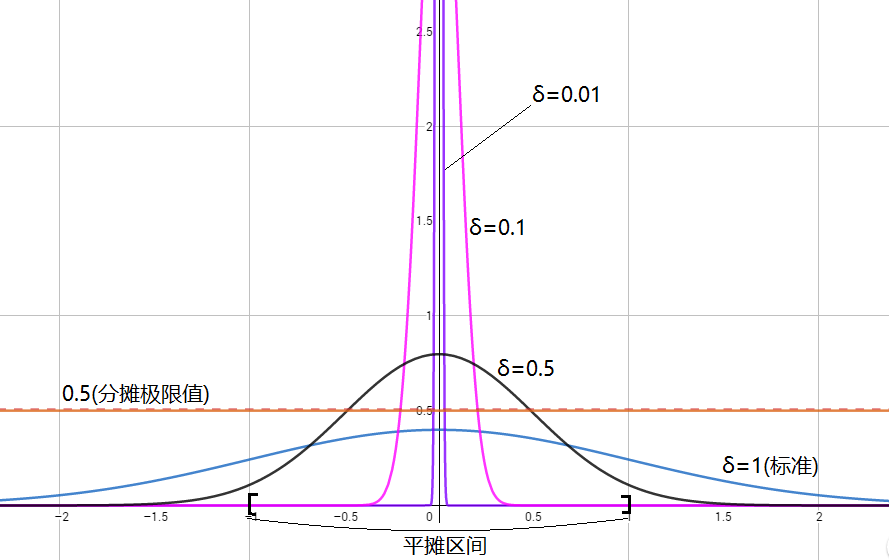
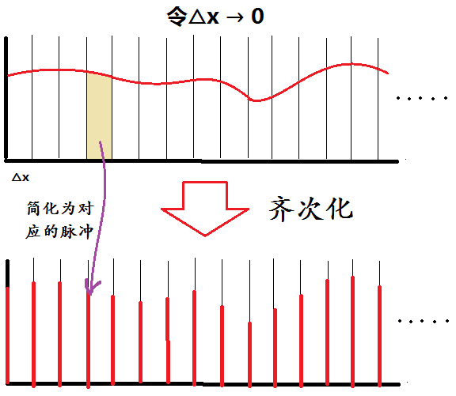
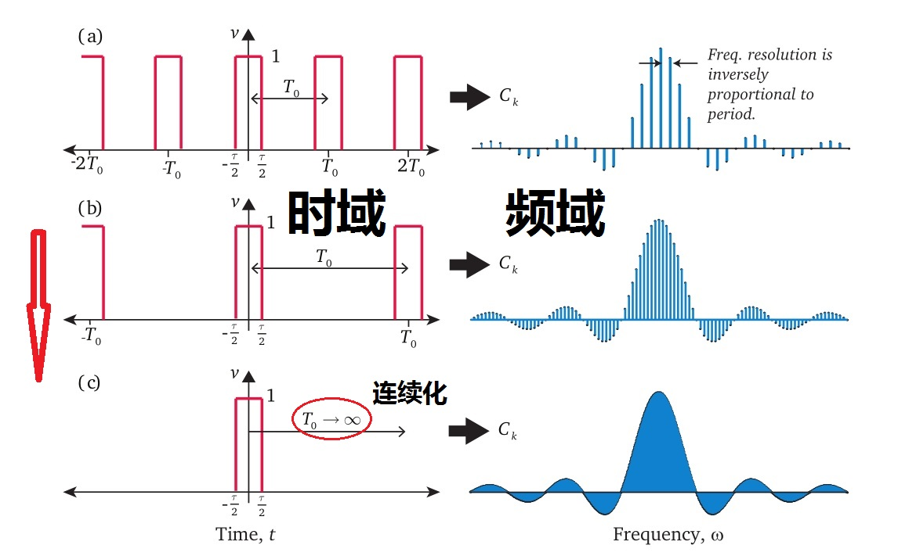

经济学里可能见到过类似这样的案例：
买一本40元的书，为了得到20元的优惠，可能愿意辛辛苦苦跑半个城市去特价书店买；可买一部4000元的手机，同样的20元优惠，往往连下楼的冲动也没有。
《经济学原理（第6版）》原书
基于人们评估相对价格的趋势，或者心理账户理论（行为经济学），再忽略掉互联网的因素……这大概成立的。
但，究竟是为什么呢？
这是否就是“短视”的表现呢？
换句话，贪小便宜究竟理不理性？
……
回答是：这反而是适当的做法。
我们从摊还分析（又称，分摊分析）的角度来看。
首先，在算法中，摊还分析是用来评价程序中的一个操作序列的平均代价，有时可能某个操作的代价特别高，但总体上来看也并非那么糟糕；可以形象的理解为把高代价的操作“分摊”到其他操作上去了，要求的就是均匀分摊后的平均代价。
当这个操作序列趋向于无穷时，摊还的平均代价往往渐进于一个函数，由此还可以引出摊还复杂度的概念。
下图为一个摊还分析的简单示例：

某连续操作f(t)在某区间上的摊还
面向对象的程序设计中，比较典型的例子是：对于向量（即，数组）溢出时的扩容操作，采用加倍扩容策略而不是追加常量的空间。加倍扩容的平均分摊复杂度远小于常量扩容。下图取自邓神的《数据结构（C++语言版）》。

向量扩充图解
加倍扩容法的实现及细节可参考书中的P34~36。
《数据结构（C++语言版）》原书
好了，我们来分析最开始的问题。
比如，将“消费40元”当做一个操作，它的代价是“20元优惠”，显然，这可以被视为一种“正”的代价。相对的，对于4000元的手机，对应“消费40元”的100次操作，它的代价仍然是“20元优惠”。
也就是说，对于长时间的平均分摊代价，同样的20元优惠，买书比买手机高了100倍！而由于优惠是“正”的代价，这导致优惠买书的预期收益非常高。
可以看出，人们对收益的权衡，会潜意识地使用摊还分析，考虑长期效应。即，摊还分析是一种自然的策略。
进一步，哪些商品适合于摊还分析呢？
自然是长期使用品，即“必需品”。
但怎么区分“必需品”和“非必需品（奢侈品）”呢？
传统的经济学通常以市场上该商品的需求价格弹性（可视为，价格对需求的偏导数）作为区分的指标。
但是，仅仅以市场定义的范围来作区分，如冰淇淋市场和香草冰淇淋市场，而不区分面向张三的冰淇淋市场和面向李四的冰淇淋市场，对个人偏好的体现是远远不足的。现代由于数据挖掘的深入，这种面向对象的趋势就更为明显。
比如，假设有一个修过手机屏6次的频繁吃土青年，外屏4次、内屏1次、屏幕总成1次。而且由于对手机不爱护的生活习惯，今后也可能继续修手机233。
那么，修手机的消费，对该青年来说就更倾向于长期使用品，于是需要摊还分析；而对于粉底、女装一类的商品，则更倾向于奢侈品（需求量小趋于0，加上价格不敏感），可能就用不上摊还分析。
那么，问题是：在不考虑时间成本的情况下，是否应该购置一台新手机？
对于普通安卓手机，更换外屏的花费在90元左右，更换内屏/总成的花费在200元左右。假设该青年半年摔一次手机（？），则平均分摊花费可估计为（X1000/3/360 + 9080%/360/2 + 200*20%/360/2=）X+0.15元/天。
假设此时更换新手机，选择价位Y千元档，生命周期T假设为3年，且前1年不摔（？）。则分摊花费为（Y1000/3/360 + 0.312/3=）Y+0.20元/天。
于是结论是：（仅考虑当前摊还分析）若Y比X便宜500元，那么购置新手机就是明（ji）智的选择。
当然，深入研究分摊费用随时间的变化趋势，综合考虑个人偏好，可以得出更精准的策略。但重点是，要敢于量化指标，而不仅仅停留于对客观事物的定性状态。如下图示例的一个粗略的模拟演算：

摊还分析实例：手机问题
其中，蓝色粗线为标准曲线（X=2，T=3），其它为对照组（Y任取，T=0）。横轴单位为半年，纵轴为摊还费用的对数值。
可以看出。
定量，往往能更好地定性。考虑长期，可能做出不同选择。
但，不仅仅可以在时间上进行摊还，还可以在空间上进行摊还。
比如，下面考虑一个标准正态分布。
简单提一下正态分布的历史。正态分布的实质认识源于最小二乘法的发现，最小二乘法源于对自然规律的猜测——最大概然估计。因此，正态分布实际是反映最可能的现实。
考虑标准正态分布在整个实数轴上的分摊，容易得到分摊值为0。这是一个退化的情况，我们主要考虑非退化（即，具有一般性）的情况。
比如，取定区间[-δ，δ]，δ为方差，此处显然为1，即[-1,1]。只考虑标准正态分布在[-1,1]内的分摊。

正态分布在[-1,1]上的摊还
如上图。此时，将极限定义为：固定[-1,1]区间不变，标准差δ不断趋于0，则分摊极限值趋于1/2=0.5。
注意到，当δ不断趋于0，该正态分布趋于一个“单位脉冲”（又称，Dirac函数，当然，这里还需要一个适当的比例放缩变换，放缩系数为2:1），波峰形状变得集中而陡峭。这说明，对于特定点趋于极限的脉冲式效应，有时可以通过区间分摊来获得有限值。
现在尝试考虑数学物理中著名的齐次化原理（Duhamel原理）。它是物理学上的一种简化手段，其作用如下图所示：

齐次化原理图解
可以看出，齐次化原理的主要目的将原本连续的函数，当成间断的脉冲的无穷叠加（这种无穷叠加表现为脉冲的连续化，最后成为一个积分）。它是将无穷小区间上的一个分摊的量，收束成集中点上的脉冲，类似于摊还分析的逆过程。
再考虑傅里叶变换。Fourier变换是将时域信号转换为频域信号，Fourier解析是将频域信号转换为时域信号。对于任意的一个正/余弦周期时域信号基，都对应唯一的频域值。如下图所示（摘自知乎，稍修）：

从Fourier（离散）级数到（连续）变换
从频域到时域，正像是摊还分析，将每个脉冲对应分摊到整个时间维度上；从时域到频域，也像是摊还分析的逆过程，将时域上连续的信号收束为频域上的一组脉冲。当时域上的周期性越差（周期越长），频域上的脉冲更加密集，最终得到一般的连续函数。
它与齐次化原理的本质相异之处，仅仅在于选择的收束基不同而已。而且，这组基选的非常巧妙，导致部分揭示了周期现象的本质。（相对而言，齐次化原理的基就比较平凡；另外，如果选择有限多个平凡基，再推广，很容易联想到数值积分中经典的手法“插值”；甚至，结合矩阵理论，这些都可看做是一种空间到空间的变换，只不过在某些空间中看同一个问题的形式更加简洁罢了。这里就不展开叙述。）
下面我们再分析一个湍流的例子。并从时空摊还的角度进一步理解摊还分析。
考虑（均匀各向同性）湍流的长期效应。
不妨先简单提一下，各向同性湍流的历史。1935年，G.I. Taylor在风洞实验的均匀气流中设置一排或者几排规则的格栅，均匀气流垂直流过格栅时产生不规则扰动。这种不规则扰动向下游运动过程中，由于没有外界干扰，逐渐演化为各项同性湍流。发展了各项同性理论。
先说湍流，湍流的流动一般分解为时均运动（稳态分量）和脉动运动（随机分量）。其中，任一时刻的时均运动都是该时刻湍流的无规则运动在空间上的摊还。
由于湍流的耗散作用（含内部和边界），尽管可能存在间歇的波动，一个不受干扰后的湍流最终将趋于稳态（如考虑管道流动，其脉动将衰弱至0，接着时均也将随后衰弱至0）。
即，一个长期的湍流运动，可以描述为在空间上、时间上的摊还。
……
从以上几个简单的实例中，读者应该能够渐渐体会到摊还更深层的意义：摊还，就是将任意维上短暂的（脉冲）效应尽可能分散到维的全域上，对任何维度都是成立的；无论时、空，或者更抽象的维度。（进一步，如何考虑非整数的维度，即“分形”对象呢？）
价格在时间上的摊还分析，指导着消费者的购买行为；成本在空间上的摊还分析，指导着生产者的产业发展（规模效应）；甚至，思考发达国家的污染排放在历史和全球上的摊还（温室效应）；冲量在作用面上的摊还；脉冲星在宇宙空间视差上的摊还……
当然，重点不是应用，而是，在面对一个问题或处境时，能自然而然地想到摊还的思路。（在面对不同的问题的时候，多数的思路往往是一致的。如何构建新思路，也是一个非常值得探讨的问题。）
甚至，动态规划，数值逼近……所做的无非就是某种合理的简化。简化到什么程度才叫合适呢？我们究竟需要多少知识才能做出好的决定？那么，信息论的雏形就跃然纸上了……所谓触类旁通。
那，极好了。
……
借季羡林先生《留德十年》的一段话做结尾:
我只是一个人在夜深人静时，伏在枕上，让逝去的生命一幕一幕地断断续续地在我眼前重演一遍，自己仿佛也成了一个旁观者，顾而乐之。
愿生命的一分一秒都充满平和与喜悦、
| 原载于： |
|---|
| 《思维之海-价格悖论与摊还分析》 |